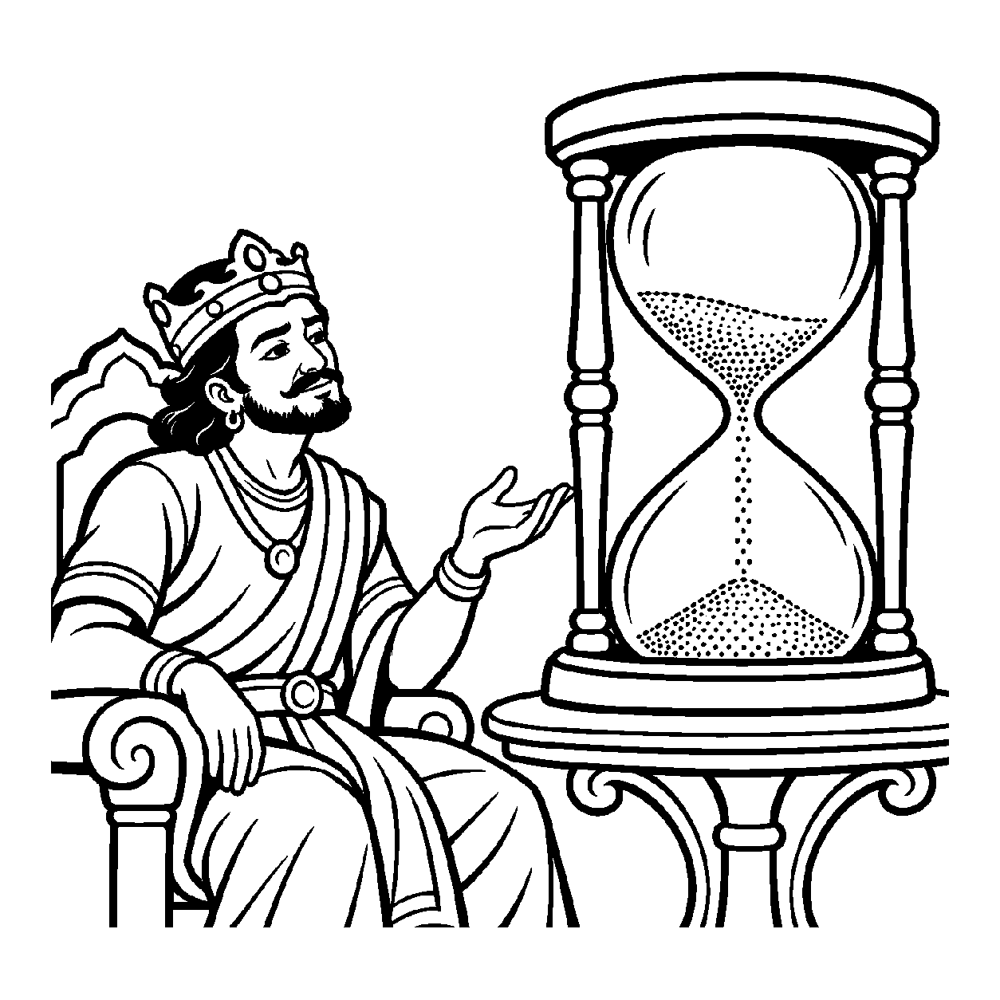

પર્વત પરથી ખળખળ વહેતા ઝડપી ઝરણામાં એક સૂકું પાંદડું તણાય છે. એક પથ્થર સાથે અથડાય છે, ગોળ ઘૂમરી ખાય છે, આગળ વધતાં જ તૂટીને બે ટુકડા થાય છે અને થોડી જ વારમાં પાણીના વમળમાં ડૂબીને અદૃશ્ય થઈ જાય છે. કાંઠે ઊભેલો દર્શક તે પાંદડાની ક્ષણ-ક્ષણની અસ્થિરતા જોઈને કહે છે: "આ પ્રવાહમાં કશું જ એક ક્ષણ પણ સ્થિર રહેતું નથી, પ્રત્યેક ક્ષણ કેવળ વિનાશ અને પરિવર્તન જ છે!" વાસ્તવમાં જળની સત્તા તો વહેતી રહે છે, પરંતુ દ્રષ્ટિ કેવળ તે પાંદડાના ક્ષણે ક્ષણે થતા વિનાશ અને બદલાવ પર જ કેન્દ્રિત છે. તેવી જ રીતે સંસારના પ્રત્યેક દ્રવ્યમાં તેની અવિચળ સત્તાને ગૌણ (અદૃશ્ય) કરીને, પ્રતિસમય જે પર્યાય જન્મે છે અને બીજી જ ક્ષણે નાશ પામે છે — "સંસારની પ્રત્યેક પર્યાય ક્ષણિક, વિનશ્વર અને અશાશ્વત છે" — એમ પર્યાયના ક્ષણે ક્ષણે થતા વિનાશને મુખ્યતાથી ગ્રહણ કરતો જે નય છે, તેને 'સત્તાગૌણોત્પાદવ્યયગ્રાહક નિત્યાશુદ્ધ પર્યાયાર્થિકનય' કહેવાય છે.
જૈન દર્શનમાં સમય એ કાળનો સૂક્ષ્મતમ અવિભાજ્ય એકમ છે. એક સમયમાં જે પર્યાય હોય છે તે બીજા સમયે હોતી નથી; તે તત્કાળ વ્યય પામે છે અને નવો પર્યાય ઉપજે છે. સામાન્ય જીવ પોતાનો પર્યાયોને કાયમી માનીને તેમાં મોહ કરે છે. આ નય સાધકની આંખો ઉઘાડે છે અને બતાવે છે કે ક્રોધ, સુખ, દુઃખ કે શરીરની કોઈ પણ અવસ્થા કાયમી નથી; તે પ્રત્યેક સમયે વિનાશી છે. સત્તાને ગૌણ કરી ક્ષણિકતાને જોવાથી સંસાર પ્રત્યેનો ગાઢ મોહ ક્ષણવારમાં ઢીલો પડી જાય છે.
આ નય સાધકને સમજાવે છે કે જ્યારે પ્રત્યેક પર્યાય ક્ષણે ક્ષણે મરી રહી છે, ત્યારે તેમાં આસક્ત થવું કેવળ દુઃખનું કારણ છે; પર્યાયથી પર થઈને જ શાશ્વત શાંતિ મળે છે.
પ્રતિસમય પર્યાય વિનશે, ક્ષણિક સંસારની રીત;
સત્તા ગૌણ કરી જુએ, જ્ઞાની નિર્મળ ચિત્ત.
ઝાકળ બિંદુ સમું જીવન, વાદળ જેવી છાય;
ક્ષણભંગુરતા સમઝતાં, આતમ શાંતિ થાય.
સંસારના ક્ષણિક સુખ-દુઃખના પર્યાયોમાં મોહિત થયા વિના સદા અલિપ્ત સાક્ષીભાવ કેળવવો.

ધર્મપુરી નગરમાં રાજા વિજયરાજ પોતાની રાજગાદી પર બેસીને દરબારીઓને કહેતા: "મારા રાજ્યનો આ વૈભવ, આ નૃત્ય અને આ સંગીત સદા આમ જ ચાલ્યા કરશે! આ આનંદ ક્યારેય ખૂટવાનો નથી!" રાજા વર્તમાન ભોગોમાં એટલા ડૂબેલા હતા કે તેઓ સમયની ગતિને સાવ ભૂલી ગયા હતા. કોઈ તેમને ધર્મ કે આત્મસાધનાની વાત કરતું તો તેઓ હસી કાઢતા કે "હજી તો ઘણી વાર છે!"
તે સમયે મહેલમાં એક જ્ઞાની સંત પધાર્યા. તેમણે રાજાના સિંહાસન સામે ટેબલ પર કાચની એક સુંદર રેતીની ઘડિયાળ (રેત-ઘડી) મૂકી. કાચની ઉપરની બરણીમાંથી રેતીનો એક-એક ઝીણો કણ સતત નીચે ટપકતો હતો. સંતે રાજાને કહ્યું: "રાજન! જરા ધ્યાનથી આ રેતીના કણોને જુઓ. જે કણ ઉપરથી નીચે પડી ગયો, તે શું ક્યારેય પાછો ઉપર જઈ શકે છે?" રાજાએ કહ્યું: "ના મહારાજ, એ તો નીચે પડીને પતી ગયો!" સંતે ગંભીર વાણીમાં કહ્યું: "રાજન! સત્તાગૌણોત્પાદવ્યયગ્રાહક નિત્યાશુદ્ધ પર્યાયાર્થિકનયને ઓળખો! તમારા આયુષ્ય અને ભોગોની ક્ષણો પણ આ રેતીના કણો જેવી છે! પ્રત્યેક ક્ષણે પર્યાય જન્મે છે અને મરી જાય છે! જે સમય વીતી ગયો તે ક્યારેય પાછો આવવાનો નથી. તમે જેને કાયમી માની બેઠા છો તે સંસાર ક્ષણે ક્ષણે વિનાશ તરફ દોડી રહ્યો છે! જો આ ક્ષણિક પર્યાયોના મોહમાં જ રચ્યાપચ્યા રહેશો તો અંત સમયે હાથમાં કેવળ પશ્ચાત્તાપ જ રહેશે!" રાજાના હૃદયમાં આંચકો લાગ્યો. રેતીના કણોની જેમ વહી જતા જીવનની ક્ષણિકતા સમજાતાં તેમનો વિષય-મદ ઓગળી ગયો. તેમણે સદ્ગુણોની સાધના શરૂ કરી અને તેમનું ચિત્ત પરમ વિશ્રામમાં શાંત થઈ ગયું.
જો જીવ કેવળ ક્ષણિકતાને જ અંતિમ સત્ય માનીને આત્માની સ્થાયી સત્તાને ભૂલી જાય, તો તે સર્વથા નાસ્તિક કે શૂન્યવાદી બનીને ભટકે છે.
આ નય ક્ષણિકતાનો બોધ કરાવી સાધકને મોહમાંથી મુક્ત કરે છે અને અવિનાશી ધ્રુવ તત્ત્વ તરફ દોરી પરમાત્મામાં સમાવી દે છે.